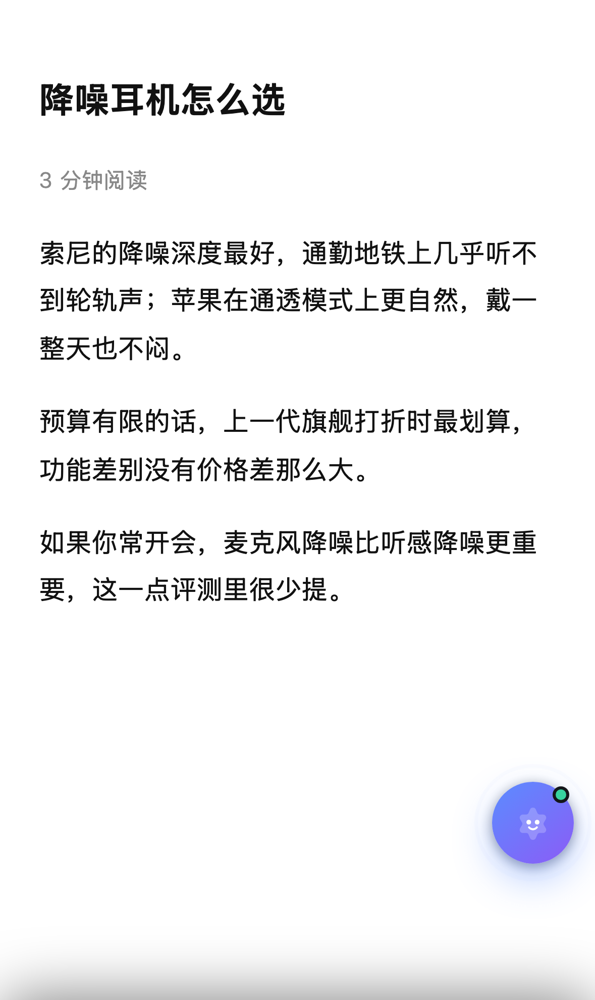
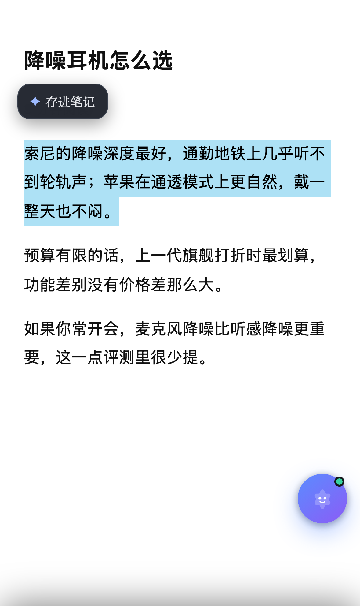
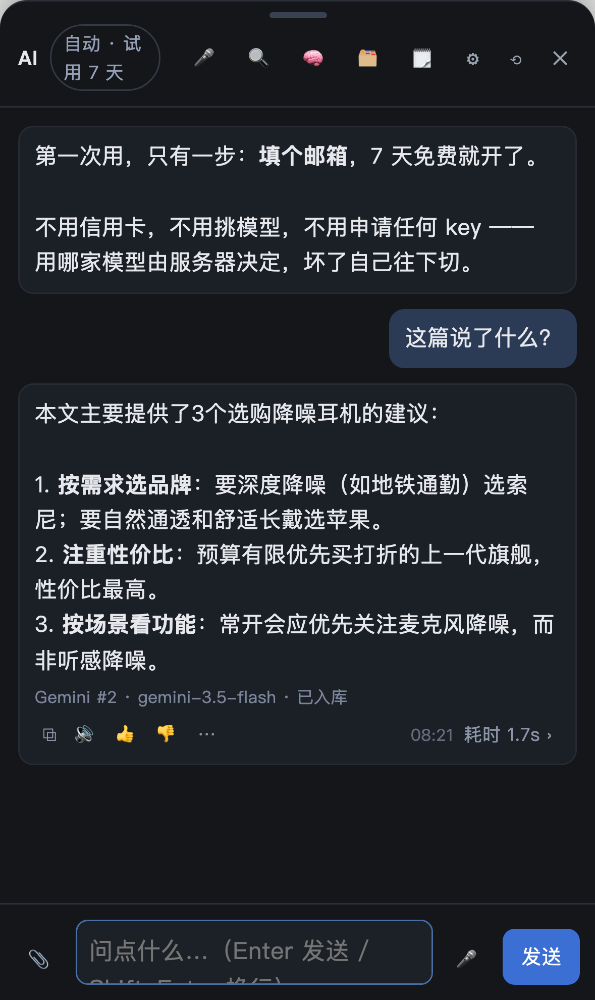

Tap once and a small round helper appears in the corner of whatever you are reading. It already knows the page. Select a paragraph and a 存进笔记 button shows up above it — one tap and the passage is filed into your notes with the URL and the time. No App Store, no browser extension, no new account: the same email you use in the web app.



Install the free Userscripts extension once, then install the sprite script. After that every page you open has the bubble in the corner — no sharing, no bookmark, no extra taps.
The script only talks to your own Sidebrain server; the extension collects nothing. Turn it off any time in Userscripts.
If you’d rather not add an extension, the sprite can ride in on a Shortcut instead. Tap ⋯ → 下载小精灵快捷指令, download Sidebrain-Sprite.shortcut, tap the file, Add Shortcut. Then in Safari: Share → Sidebrain 小精灵.
iOS 26 no longer accepts self-hosted import links (shortcuts://import-shortcut) — Apple answers “The shortcut URL provided was invalid”, so the file has to be downloaded and tapped once.
The same trick without any extension: a bookmark whose address is a small piece of JavaScript.
Prefer it always-on? The optional Userscripts extension still works and needs no clicks — see the install page. It is no longer required.
A few sites (some big publishers) forbid third-party scripts. When that happens the sprite does not silently fail — it opens the article in the web app instead, so you can still ask about it and keep the notes.
The bookmarklet has the same fallback: 3 seconds with no sprite → the article opens in Sidebrain.
Model choice is not your problem: the server picks the cheapest channel that is good enough, free tiers first.
The generic shortcut (asks for your connection code at import):
Download Sidebrain-Sprite.shortcut
Your code is the long sb_… string in the web app (⋯ → Share address shows the same account).